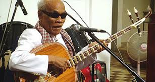

Seng Lymeng
Seng Lymeng

រីករាយសន្តាប់ជាមួយការលេងចាបុីដងវែង
by admin / ចែករំលែក / ១អ្នកស្រុករស់នៅតំបន់ជួរភ្នំដងរែកបានឱ្យដឹងថា ការបំផ្លាញកូនខ្លួនឯងដូច្នេះ បណ្តាលមកពីមេហ្វូងខ្លាចក្រែងកូនឈ្មោលនៅ ក្នុងហ្វូងនោះនឹងដណ្តើមអំណាចធ្វើជាមេហ្វូងទៅថ្ងៃក្រោយ ។
Comments
Done
Seng Lymeng
awesome awesome awesome awesome awesome awesome awesome awesome awesome awesome